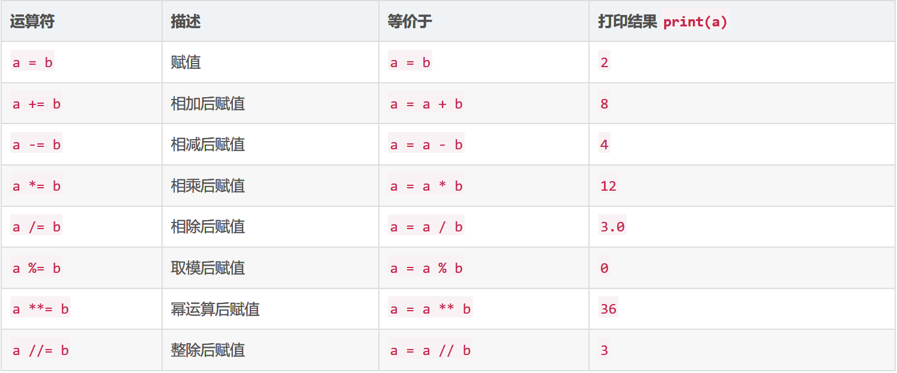

ex1 | print
1 | print("I 'said' do not touch this.") |
1 | I 'said' do not touch this. |
p.s. 两种方法均可使用；需要注意的是，如出错误情况，会显示出错的行数，错误一般在此行或者之前。
ex2 | 注释和#号
1 | print("Hi # there.") |
p.s.
- 这里的#没被忽略掉是因为它在”引号”里面
-*- coding：utf-8 -*-如果是python 2 会需要这行代码，不过python 3 就没必要了。- 虽然#表示注释，但上面的代码还是会起作用，这中方法能让字符编码格式被识别
ex3 | 数字和数学计算
1 | print(100 - 25 * 3 % 4) |
在powershell中表示如下
1 | 97 |
p.s. 97 = 100 - (75 - 4 * 18)
ex4 | 变量和命名
命名时，多个单词之间需要加下滑线,如：
1 | # How much space is there in a car; this is a floating point. |
ex5 | 更多的变量和打印
1 | my_name = '敲敲敲可爱' |
1 | Let's talk about 敲敲敲可爱. |
p.s.
%s 表示文本；
%d 表示数字；
%f 表示浮点（小数点后很多位）；
%.2f 表示小数点后显示两位；
%.1f 表示小数点后显示一位；
%.f 表示四舍五入（如：5.5 显示为 6；而普通浮点是去掉小数部分）
显示中文和其他语言，需要在代码顶端输入# -*- coding: utf-8 -*-(有没有*都可以)；并且中文前面要加u（如：my_name = u'敲敲敲可爱'）——在python 3 里面没有必要
Python 3 输入print 一定不要忘了括号()——血的教训
ex6 | 字符串和文本
1 | hilarious = False |
p.s.
False 不能当作变量；
String 是字符串，其中可以包括文本和变量，之前使用过的叫做f-string(如下)
1 | f"some stuff here {avariable}" |
？
.format(hilarious)是干什么的？
答：https://app.yinxiang.com/shard/s72/nl/14362313/70ddf385-e965-458e-a3e4-59bbb491c030
ex7 | 更多打印
1 | print("Its fleece was white as {}.The lamb was {} pounds heavy and born on {}.".format('snow', 123, 5.12)) |
p.s.,end = ' ' 代表空格
format 后面小括号有几个值，前面就得有几个花括号，要和花括号对应
ex8 | 打印，打印
1 | # 不要忘了ex7的注意，format 后面小括号有几个值，前面就得有几个花括号，要和花括号对应 |
终端显示如下：
1 | 1 2 3 4 |
ex9 | 打印，打印，打印
1 | # \n代表换行，有点跟正则表达差不多 |
终端显示如下：
1 | Here are the months: |
ex10 | 那是什么？转义字符

示例：
1 | tabby_cat = "\tI'm tabbed in." |
终端显示如下：
1 | I'm tabbed in. |
练习：
CSDN 哈哈餐馆博客
ex11 | 提示别人,input()打印提示
1 | print("How old are you?", end=' ') |
p.s.
通过 input 提示打印，可以输入答案，最后一段会根据答案进行变化
ex12 | input()打印提示
1 | height = input("How tall are you?") |
p.s.
input()命令需要用户在终端自行输入信息
ex13 | 参数、解包、变量
from sys import argv
script, 1, 2, 3 = argv
1 | # This is how you add features to your script from the Python feature set. And this keeps your programs small, but it also acts as documentation for other programmers who read your code later. |
p.s.print(">>>>> argv=", repr(argv))这是Zed常用的debug命令
！输入参数时，代码里面有几个就输入几个，多输入或少输入都会提示错误
ex14 | 提示和传递
prompt = ‘>>> ‘
likes = input(prompt)
1 | from sys import argv |
p.s.
别忘了，三个引号"""的作用是表示多行信息
ex15 | 读取文件
txt = open(filename)
print(txt.read())
1 | # 这次的练习很容易迷糊，需要多次复习！尝试自己再写一遍！ |
p.s.
输入文件名时，需要准确无误，否则会提示错误
别忘了print(f"Here's your file {filename}:")里面的f
###尽量多看，多练习下面的练习
练习答案与解析 —— CSDN博客
ex16 | 读写文件
target = open(filename, “w”)
target.truncate()
target.write(line1 + n + line2 + n + line3)
1 | from sys import argv |
p.s.
在终端运行时，一定不要忘了输入文件名，比如：
python ex16.py test.txt
练习 | 写一个读取脚本
解析与答案 —— CSDN博客我的练习：
1 | from sys import argv |
ex17 | 更多文件操作
from os.path import exists
print(“{exists(to_file)}”)
1 | # 引入库 |
p.s.
{exists(to_file)}注意不要写错，练习的时候错了很多遍
每个步骤的功能注释别忘了看
？
作业练习与解析 —— CSDN博客
精简之后的代码为什么执行失败，需要再研究一下
ex18 | 命名、变量、代码、函数
1 | # this one is like your scripts with argv |
终端显示如下
1 | PS C:\Users\Administrator\mystuff> python ex18.py |
p.s.
这一练习可能有点不理解，不过没关系，Zed说多练习，学着破坏代码，在之后的练习中会介绍更多
ex19 | 函数和变量
cheese_and_crackers(20, 30)
cheese_and_crackers(amount_of_cheese, amount_of_crackers)
cheese_and_crackers(amount_of_cheese + 100, amount_of_crackers + 1000)
1 | # 给cheese_and_crackers 下定义，创建一个function |
p.s.
函数中的变量既可以是数字、参数，也可以是数字和参数的组合，进行运算也可以
ex20 | 函数和文件
f.seek(0)
print(line_count, f.readline())
1 | from sys import argv |
p.s.
不要忘了open文件再打印其中内容
不要忘了定义函数的时候里面的f和冒号：def print_all(f):
课后练习与答案：
课后练习与答案 —— CSDN博客
+=是什么？及拓展
.seek()是什么？
虽然说博客里面有讲解但是还需要多看，有点没有理解
ex21 | 函数可以返回东西
1 | def add(a, b): |
?
用其他方法求出
what